Playback User Guide
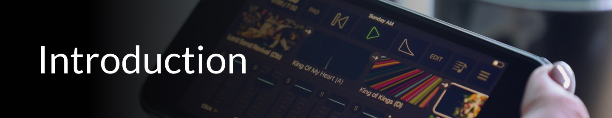
From planning your setlist, to team rehearsal, and to live performance, Playback provides powerful tools along the way to save you time for what really matters.
This guided tour will walk through everything to know about using Playback as a live tracks solution: starting with the basics of setting up Playback on a device and walking through each step of using it to lead worship well.
Get Started | Video Walkthrough
Embedded video (not downloaded): https://player.vimeo.com/video/202233533
App Overview
Playback is a powerful audio playback software available for free download from the Apple App Store compatible with MacOS, iPadOS, and iOS. For latest compatibility see: 📖Playback Minimum System Requirements
Search for “Playback” on the Apple App Store from your device or visit this link.
Login Requirements
General Login Requirements
When opening Playback for the first time, the login screen will appear. In order to log into Playback, a MultiTracks.com account is required. From this screen, you have two options:
- Sign up for a free MultiTracks.com account. The first admin MultiTracks.com account is the first step towards building your MultiTracks.com organization, but does not require payment info. This lets you explore Playback’s menus and free features without paid content.
- Log into your MultiTracks.com user account, created on the web.
Organizations vs. Users
An organization in the MultiTracks.com ecosystem is the umbrella under which content can be purchased, users can be added, and subscriptions can be shared. When an 'account' is created using the "Sign Up" flow, an organization and a user is created simultaneously and the user is set as the owner of the organization. When logging into Playback, there is an organization selection prompt, to select which organization to log into. If you are a user belonging only to the organization created when you built your account, then select that organization. However, a user can be added to other existing MultiTracks.com organizations and have access to content belonging to those organizations in Playback. Every organization that you've been added to will be available at this login screen.
Organizational Content Permissions
If you are logging into your own organization, then you are ready to start downloading your organization’s purchased content or Rental credits immediately. When logging into another organization, certain permission subscriptions need to be added to your account in order for you to access purchased tracks, spend Rental credits, or save Cloud changes to setlists, song arrangements, and MIDI Cues.
For more information about managing your organization’s team members, subscriptions, and content permissions, check out: 📖 Managing Roles and Permissions
Once logged in, you’re ready to start building a setlist!
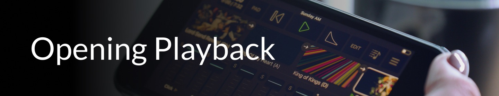
User Interface Overview
When opening Playback for the first time, an empty setlist will be created called My Playback Setlist.
Transport Controls
The top of the app interface (Transport Area) includes the primary actions for using Playback live (from left to right):
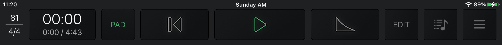
Transport Controls Explained
- Time signature/tempo display of the currently selected song (blank, if no song is loaded)
- Time display, showing the time and start/end points of the currently selected song
- Ambient Pad Player On/Off toggle
- Back To Start button
- Play/Pause
- Tracks Fade Button, which automatically fades tracks in or out during playback
- Edit Mode selector (press and hold for multiple edit modes)
- Setlists Menu
- More Menu -> access settings, login information, and more
Setlist Song Tiles
The next section below the transport controls is the Setlist section, where all added song tiles are shown. This is where song order, transitions, and song-specific settings are managed.
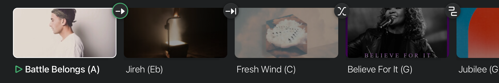
The lower, dark section is where the Waveform of the currently selected song is shown. The playhead will move over the waveform while tracks are playing, showing real-time feedback of where in a song you are. Interact with the waveform to edit song section order, adjust start/end times, and more.
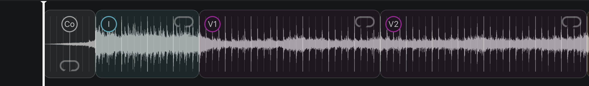
Tracks/Buses/Pad Player
The final section of Playback is the lower panel that can be toggled between a Tracks mixer view, a bus mixer view, and the Pad Player interface. Here is where you can edit the volumes of every track and bus in a selected song, interact with the Pad Player interface live, and more.
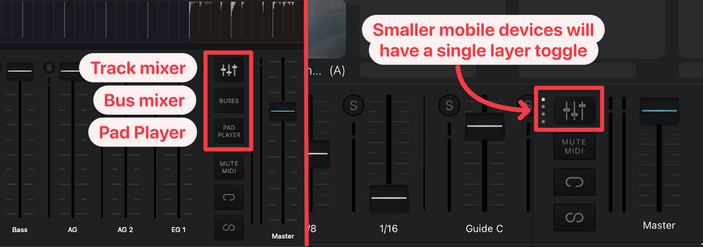
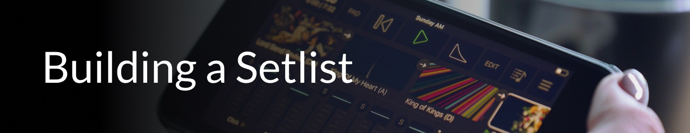
Building a Setlist
A variety of tracks products are available for over 15,000 songs in the MultiTracks.com catalog. Purchased tracks can be downloaded in Playback for free. Visit MultiTracks.com/Tracks to learn about our tracks options and find the best solution for your needs.
Adding A Song in Playback
To add a song in Playback, Tap “Add A Song” on the Setlist row to open the 'Add a Song' Menu. You'll have a number of options to navigate the song or product you'd like to add into Playback. Or simply use the top search to search through all songs.
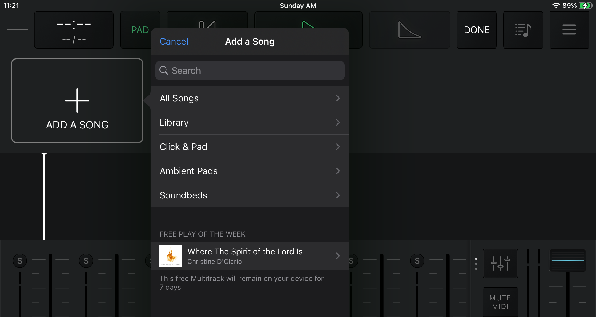
Options in the Add a Song menu
- Search
This quick search option will filter through every single song in the MultiTracks.com catalog and your organization’s Library of purchased songs and uploaded Cloud songs. - All Songs
Discover new songs in the MultiTracks.com catalog. Search by New Releases, Top Songs, and more. - Why don't I see this? The All Songs catalog in Playback is available for users with a Playback Rentals subscription or a Cloud Pro subscription.
Note: If your organization has a Cloud Pro subscription or Playback Rentals, the Click and Guide of any catalog song can be added to your setlist without tracks. - Library
Every song with any purchased content, active rentals, and Cloud Songs are all included in your Library. Sort by songs, artists, themes, and more. - Click & Pad
Add a Click & Pad to your setlist for creating extended moments. Give it a name, assign an ambient pad for the Pad Player to play, and determine the tempo/time signature of the click track. - Ambient Pad
Use the "Ambient pad" menu option to add an ambient pad as a song tile to your setlist instead of adding them into the built-in Pad Player (via Click and Pads). - Soundbeds
Musical recordings of simple chord progressions created by top producers to underscore moments with ambience. 🌐Browser Soundbeds
Adding a song
Navigate to the song you would like to add to your setlist. For the purpose of this guide, we are adding Champion by Bethel Music. Simply click "Add" to add the song, or change any of the available settings for a song.
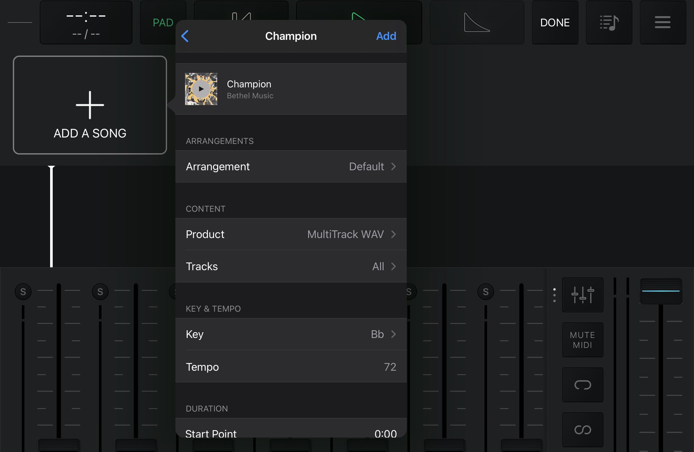
Settings available when adding a song:
- Choose a Named Arrangement
Save mixer settings, song section order, and many other customized song edits as a recallable song arrangement. Learn more about 📖Named Arrangements. - Select Tracks Product
Choose the purchased track product, or rental/click & guide options to load with the song. This may be one option or multiple, depending on your organization’s purchases. - Track Selection
View all audio tracks available with the selected Tracks product and deselect any undesired parts. - Key/Tempo
Choose between available keys before adding a song. - Note: The keys available in this menu are dependent on which keys the selected Track Product is available in.
- Note: Once a song has been added, the key can be transposed to all 12 keys and the Tempo can be changed 20 BPMs faster or slower than the song's original tempo.
- Duration
Adjust the start/end points of the song or enable an automatic 5 second fadeout. - Pad Player Settings
Determine what you would like Playback’s Ambient Pad Player to do during this song. - Start Pad with Song: Toggle ON to have the pad player automatically fade out during the entire song.
- Pad selector: Choose which ambient pad product for the Pad Player to use during this song. Any purchased Ambient Pads in your organization’s account can be selected, as well as the Song Specific Pad if available.
- Intro/Outro Only: Toggle ON to fade out the Pad Player 5 seconds into the song, and then fade it back in toward the end of the song.
- SMPTE
Learn more about SMPTE and Follow Default Arrangement here:
📖HOW TO | SMPTE out in Playback - Toggle SMPTE on or off for the specific song in the setlist. (Requires SMPTE enabled with a frame rate.
- Toggle "Follow Default Arrangement" SMPTE settings on/off.
After confirming the song is loading in with the desired settings, tap Add in the top right corner of the menu, and the song will begin downloading on your device.
Continuing adding additional songs to the setlist by repeating the steps as needed, and make sure to always Save to cloud when finished making any setlist changes. Saving your setlist to the cloud not only protects your changes but also synchronizes the setlist to all devices logged into your MultiTracks.com account, ensuring consistent access during rehearsals and performances.
The Setlists Menu
How to Use Setlists | Video Guide
Embedded video (not downloaded): https://player.vimeo.com/video/383397402
Setlists created from MultiTracks.com, ChartBuilder, or another Playback device in an organization can be opened directly in Playback. As previously mentioned, content and user permissions apply when opening a setlist with purchased or rented tracks. To ensure setlist synchronization and accessibility, always save setlists to the cloud. This ensures they can be accessed across multiple devices linked to your MultiTracks.com account.
Navigating the Setlists menu
Tap the Setlists Icon in the top-right of the transport section of Playback, to open the Setlists menu. The currently opened setlist can be renamed, saved to the cloud and accessed from anywhere else in the ecosystem, and more from this menu.
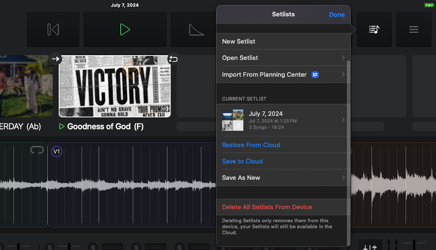
The setlist menu is where new setlists can be created, imported from Planning Center, or existing setlists can be opened. It's where all setlist management takes place in the Playback app. The Setlists menu also has options to "Delete All Setlists From Device" to clear out all local setlist data for a particular Playback app. (Deleting all setlists from a device in Playback does not delete the setlists from the organization).
To Open a previously saved setlist, tap Open Setlist and search for the setlist by name or select from upcoming or past setlists by date.
When tapping on the setlist you would like to load, you can see an overview of every setlist song, key and song length, as well as the Named Arrangement being used in the setlist. Tap any download icons to download tracks onto your device without loading the setlist, or choose to load the setlist immediately and automatically start downloading every song.
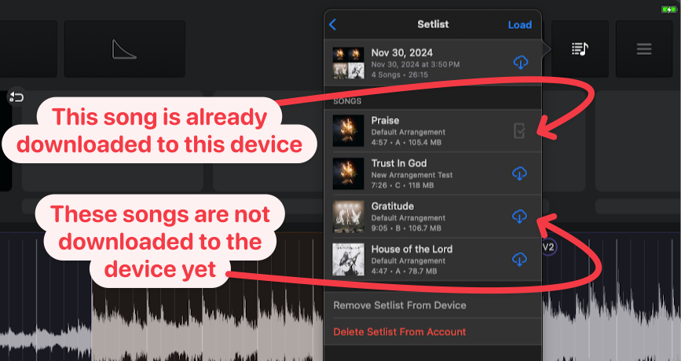
Setlist Data Management in Playback
A Playback setlist will remain downloaded on a Playback device until it is removed manually, or unless a different user signs into that Playback device (In which all local data is removed).
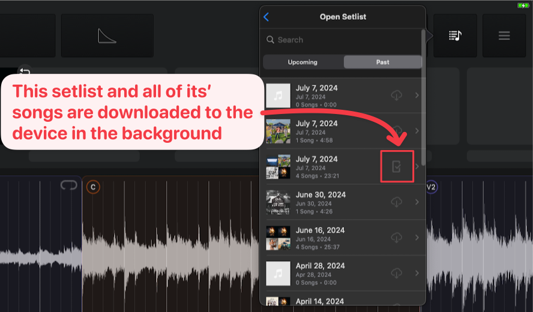
Removing Individual Setlists from a device
Individual setlists can be removed from a Playback device using the "Remove Setlist From Device" option in the setlist menu after selecting a setlist.
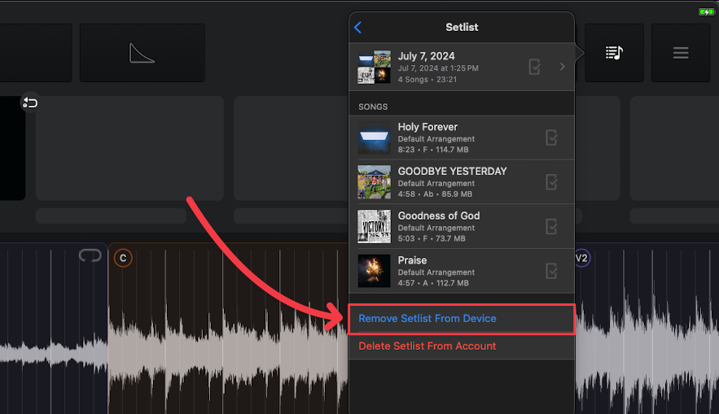
Removing ALL local setlists from a device
Remove all setlists on a Playback device by using the "Delete All Setlists From Device" option on the bottom of the main "Setlists" menu.
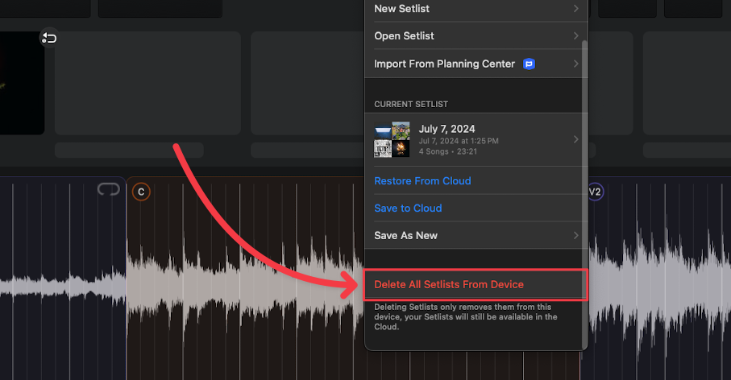
Does Deleting Setlists Remove Them From My Account? No, deleting setlists from a device does not permanently remove them from your MultiTracks.com account. This action only deletes the locally downloaded files on that specific device. Your setlists and other content are securely stored in your account and can be accessed at any time. To recover setlists, open the setlist menu in the MultiTracks.com app, locate the desired setlist, and re-download it to your device..
Once setlist songs have been added, it is time to start customizing your setlist.
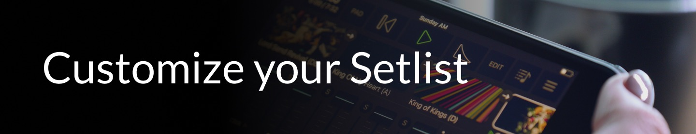
Customizing Setlists
Playback offers powerful and simple tools to build and tweak unique setlists for every service. Let’s start with an overview of the Playback Edit Modes.
Playback Edit Modes: Overview
Playback is built so that everything you see is useful in live performance. To keep the customization of your setlist easy to access, there are 7 available edit modes with specific purposes. Tap the Edit button in the top-right of the interface, and then select an edit mode from the edit menu drawer (Screenshot below).
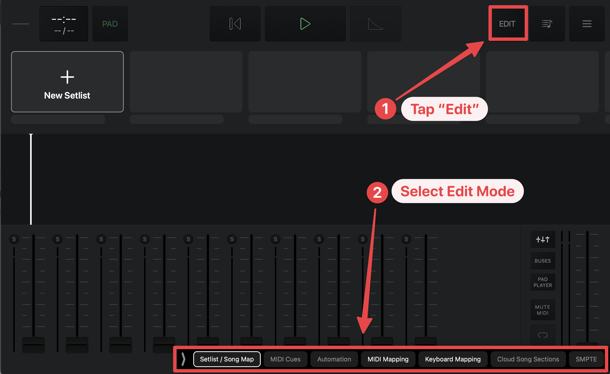
- Setlist / Song Map: The primary Edit Mode which allows for song specific changes, song order, and song section editing. Setlist Edit can also be accessed by quick tapping Edit.
- MIDI Cues: Playback Premium customers can add MIDI Cues directly to any song’s timeline to control lyric slides, lighting cues, and much more. (*Cloud Pro required to store MIDI cues to the cloud)
- Automation: Ability to automate functions in Playback for specific songs to accomplish things like automating volume changes, Pad Player on/off, and more.
- MIDI Mapping: Playback Premium users can control Playback’s core functionality with their favorite MIDI Controller, mapping buttons and faders to Playback in this Edit mode.
- Keyboard Mapping: (Only available on iPadOS and MacOS), the ability to map keyboard keys to Playback controls similar to MIDI Mapping mode.
- Cloud Section Editing: Add and edit the song section markers in any cloud song uploaded to MultiTracks.com.
- SMPTE: Ability to edit the SMPTE start markers for each song individually.
Here's the breakdown of each edit mode and what can be accomplished in each:
Setlist / Song Map Edit Mode
To enter "Setlist / Song Map" edit mode, tap the Edit button in the top-right of the interface, and then ensure "Setlist / Song Map" edit mode is selected from the edit menu drawer toward the bottom right of the Playback interface.
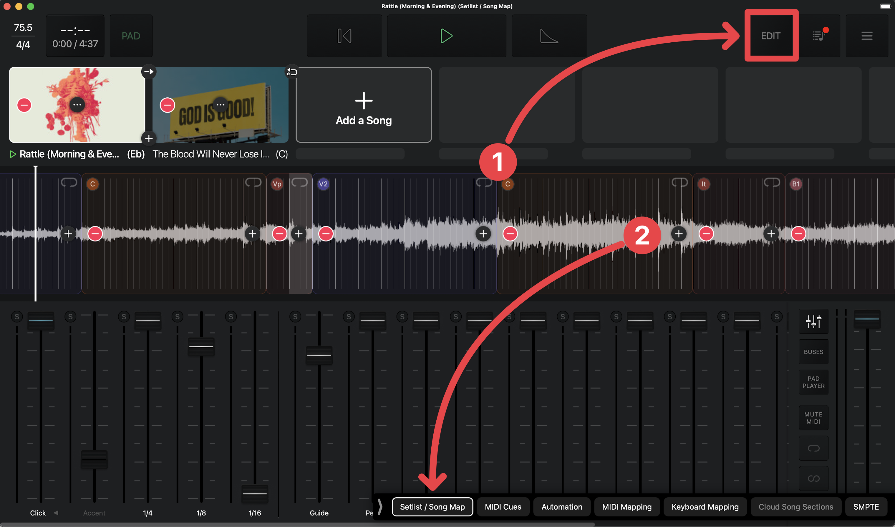
Here's what can be edited in each section of Playback:
- The Setlist Row
This is where the song tiles and transitions are displayed and interacted with. - Configure Transitions using the circle icons between song tiles.
(more info below) - Delete A Song by pressing the red minus button over the song tile
- Add a Song by pressing the small + icon between tiles or an empty song tile.
- Enter the 'Edit Song Menu' of any song by pressing the three-dot(ellipsis) icon over the tile (read Edit Song Menu below)
- The Waveform Row
The waveform timeline shows the song sections + audio waveform, MIDI cues, and more. - Edit Song Section Menu (NEW): Tapping on a song section's circle icon in the top-left of any song section opens an "Edit Song Section" menu with new options. See more below in Song Section Menu Details.
- Edit song section Arrangement (Premium feature): Tap the + or – buttons over each song section to delete or add a new song section at any point.
- Infinite Loop Preset (Premium feature): Would you like a song section to automatically loop until disabled, perhaps for a flexible song intro or outro? Tap the Loop icon in the top right of a song section to enable the Infinite Loop Preset, and when Playback reaches the section it will loop until the Infinite Loop button is pressed again.
- The Tracks/Buses Mixer
The toggle-able bottom section of Playback that either shows the Track mixer, the Buses mixer, or the Pad Player.
What can you change in the Tracks/Buses mixer while in Setlist edit? - Track Output (Pro feature): While in Setlist Edit, Tap the Track name for access to quickly route a track to a different Playback Bus output.
- Bus Output (Pro feature): While toggled to the bus view, Tap a bus name to quickly route it to a different output (more on audio outputs below)
Transitions
Transitions can be customized between songs in a setlist. There are few options to build seamless moments to fit your service.
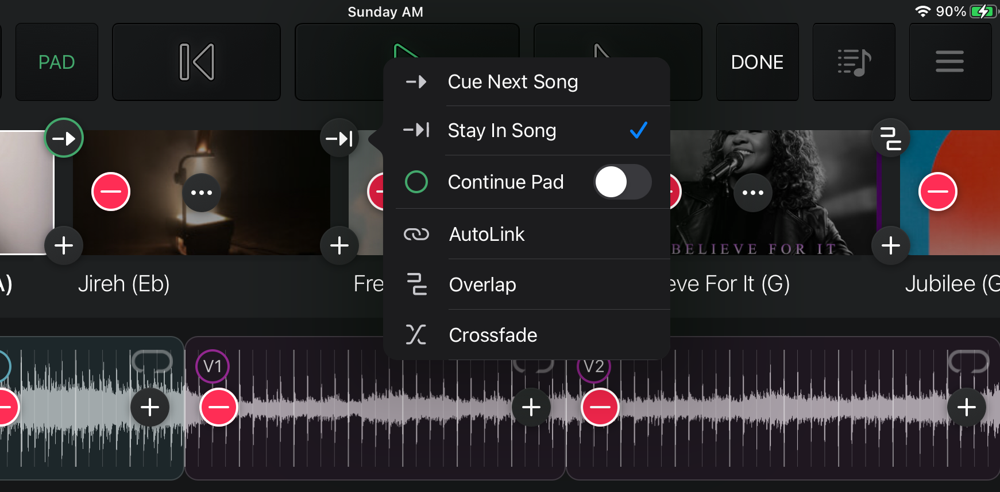
- Cue Next Song: When the first song comes to an end, the next song is selected but not started. When the Continue Pad toggle is enabled, the ambient pad will transition to the next song’s key and pad selection before the song is started.
- Stay In Song: When the first song comes to an end, the song tile continues to be selected. When the Continue Pad toggle is enabled, the pad player will continue to play the first song’s ambient pad key and pad selection after the song ends.
- AutoLink: When the first song ends, the next song instantly starts playing.
- Overlap: Overlaps and starts the second song at full volume at a length equal to: Song 1's last section duration, song 2's first section duration, or 5 seconds -- whichever is least
- Crossfade: During the last 5 seconds of the first song, the second song fades in while the first song fades out.
Pro Tip: Combine transitions with custom start and end points to build specific transitions for your setlist.
Edit Song Menu
Each song in a setlist has many customization options. Tap the More Button over the center of any song, click, or pad tile to open the Edit Song Menu.
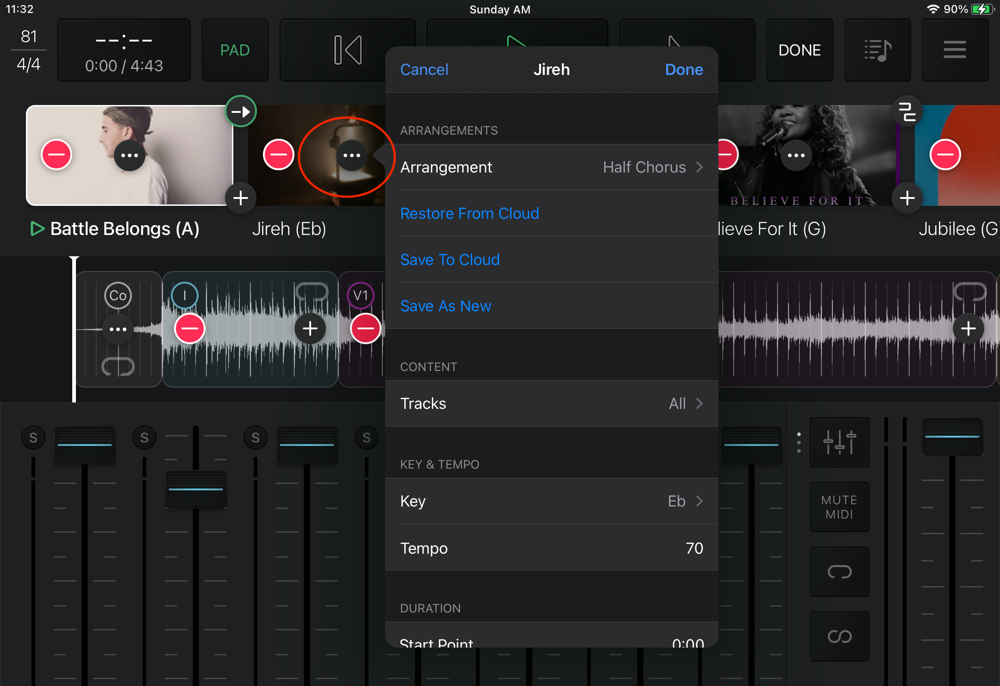
- Arrangements
Save a song’s key/tempo, fader mix, song map, and more as a custom arrangement. Custom song arrangements can be loaded into any other setlist instantly. - Content
Multiple tracks products are available to use for any song in your setlist. If a product with multiple stems is being used, tap the Tracks cell to select or deselect any available tracks. Deselected tracks will be hidden from the tracks mixer.
Click & Guide Songs: If a song has been added as Click and Guide Only by Rentals or Cloud Pro customers, The Tracks cell is where the song can be upgraded to an AppTrack using a Rental credit. Tap the Tracks cell which says “Unlock with Rental Credit” to trigger the rental process. - Change Key/Tempo
Playback supports offline key/tempo changing for all Playback users. Tap the key/tempo cells in this menu, choose the new value, and press Update. Playback will pitch the tracks to the desired values using high quality processing to maintain the quality of the audio.
The tempo or BPM of a song in Playback can only be changed to be 20BPM higher or 20BPM lower than the original tempo of the song in the MultiTracks.com catalogue. - Adjust the Start/End Point
Choose a new start or end point value, or toggle an automatic 5-Second Fadeout which will be automatically triggered as the song approaches its ending. - Pad Player Settings
The Pad Player will automatically play the default ambient pad underneath each song in your setlist in the correct key. However, you can also customize certain Pad Player behavior in this menu: - Start Pad with Song: Enabled by default to automatically fade in the Pad Player when the song starts. Disable to have the Pad Player automatically fade out when the song starts and stay off for the duration of the song.
- Ambient Pad: Is there a particular ambient pad that sounds best with a specific song? Any purchased ambient pads from MultiTracks.com can be assigned to any song in your setlist. When this song begins, the pad player will automatically transition to whichever ambient pad has been assigned.
- Intro/Outro Only: Enable the “Intro/Outro Only” toggle to automatically fade out the pad player 5 seconds into the tracks, and then fade the pad player back in 5 seconds before ending.
- MIDI Out
Each song has multiple MIDI Out settings that can be used to control lyrics, lights, and more production elements. - Lyrics Bus: Production Cues are MIDI Cues custom-built to control our ProPresenter Templates and Song Specific Patches. Tap the Lyrics Bus cell to choose which ProPresenter template cues to load in the lyrics bus of a song. If Production cues are not available, tapping this cell will request cues for the song so our team can focus on building them as soon as possible.
- ProPresenter Playlist Triggers: lyrics slides, sermon slides, and more are organized by Playlists and Playlist Items. At the start of a song, Playback can automatically send the default MIDI Cues to ProPresenter through the lyrics bus to select the correct Playlist and Playlist Item of the song’s slides. Tap and Scroll each value from Off to whichever playlist/playlist item you would like to trigger with a song starts.
- Refresh MIDI Cues: Were MIDI Cues changed for a song on the website? Press “Refresh MIDI Cues” to replace the MIDI Cues on your Playback device with the last saved MIDI Cues in the cloud for the selected song.
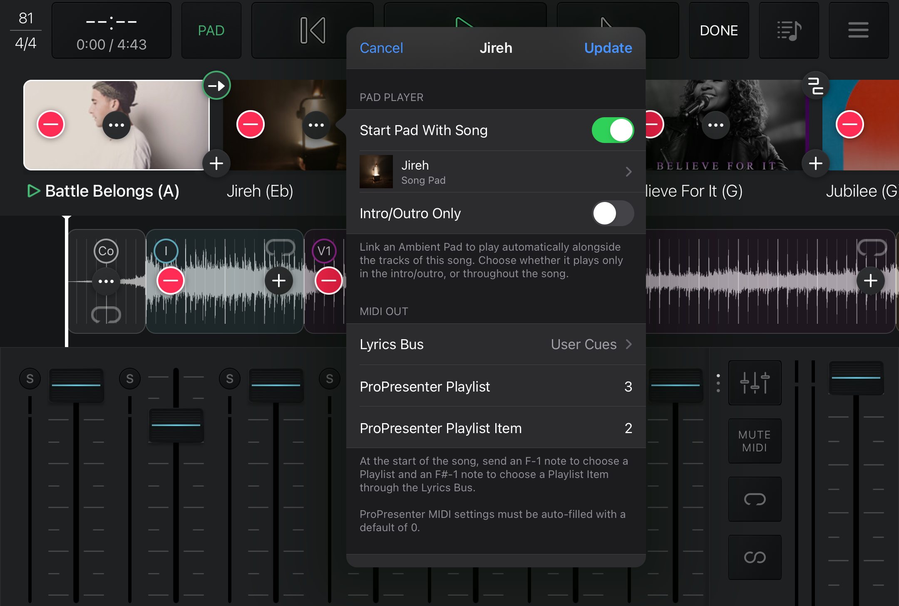
Edit Song Section Menu (NEW)
The "Edit Song Section" menu is a new menu with options for adjusting the song section name, the guide count in behavior, trimming song sections, and more.
To access the Edit Song Section Menu, simply tap on a song section icon in the top-right of any song section while in "Setlist / Song Map" edit mode.
From the Edit Song Section menu it's possible to:
- Change the name of the selected song section (📖Learn More)
- Toggle On/Off the main Guide cue for that Section
- Toggle On/Off the Guide Count In for that specific section
- Trim Song Sections (Currently in Beta) (📖Learn More)
MIDI Cues Edit Mode
Video Overview
Embedded video (not downloaded): https://player.vimeo.com/video/444911315
Tap the Edit button to open the Edit mode menu and select the MIDI Cues Edit mode.
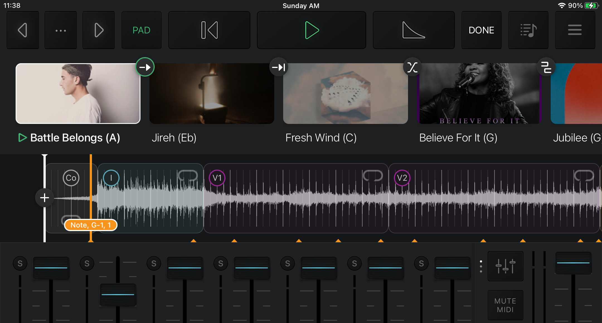
While a song is highlighted, scroll to anywhere on the timeline and tap the + icon on the playhead to add a MIDI Cue to any of the 8 available MIDI Buses:
· Lyrics Bus
· Lights 1
· Lights 2
· Patches 1
· Patches 2
· Guitar
· Aux 1
· Aux 2
Add MIDI Cue Menu
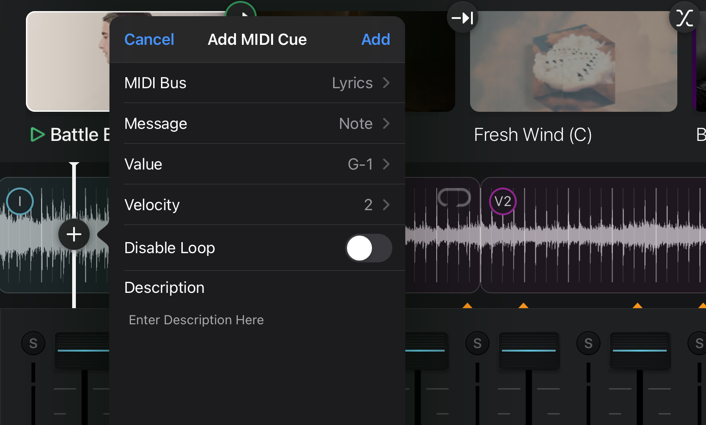
There are 3 types of MIDI messages that can be added to Playback:
- Notes: the most common type of MIDI message in live performances; notes are used to change lyric slides, change lighting scenes, control software instruments, and more. A MIDI Note message includes a Note Value, Octave, Velocity, and Description.
- Control Change Messages: used to perform actions such as changing settings in software instruments, switching keyboard sounds, or controling faders on a soundboard. A Control Change message includes a CC# value, and the intensity of that value.
- Program Change Messages: commonly used to change patches in music hardware such as keyboards, guitar gear, and Kemper devices. A Program Change message simply includes the Program number for a destination to change to.
Note: It is helpful to determine what actions in your software you want Playback to control before getting started.
- Disable Loop: Enable this setting if you want a MIDI Cue to fire only once, and then to be ignored any other time while the song section is looping. This is useful for triggering video loops, plugin setting changes, or other “one-time” MIDI actions.
- Description: Use the optional description field to leave notes identifying a specific cue.
Editing MIDI Cues
There are a couple ways of selecting and editing MIDI Cues on the waveform.
- Tap the selected MIDI Cue’s label to quickly open the MIDI Cue edit menu.
- Tap the Left and Right arrows in the top left controls to quickly scroll through the selected MIDI Cue.
Tap on the ellipsis (3 dot) menu in the top left to open a quick access menu for the selected MIDI Cue.
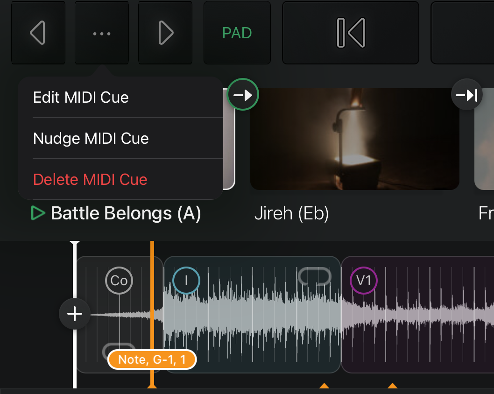
This menu gives you a couple options:
- Edit: this opens the MIDI Cue edit menu
- Nudge: Use the arrows to nudge the selected MIDI Cue along the timeline by 1/16 note increments
- Delete: Delete the MIDI Cue from this song
Copy and Paste Cues
Each repeated song section for most songs will have the same exact lyrics and the same rhythm. Instead of manually adding new MIDI Cues to each repeated song section, simply build the MIDI Cues for one section and copy to each repeated section.
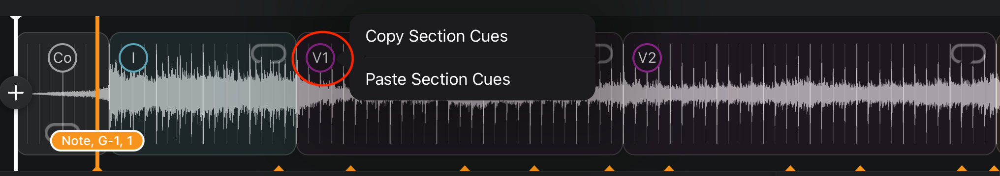
- Tap the bubble of the song section with finished MIDI Cues
- Choose to Copy the MIDI Cues
- Tap the bubble of the song section destination
- Paste the MIDI Cues, and instantly the cues will be added to the waveform of the selected song section
Add Cues while Playing
When adding MIDI Cues to a song that controls lyric slides, it’s important to trigger lyrics at the exact moment you need them. MIDI Cues can be added to the Lyrics Bus while tracks are playing and are sent out of Playback in real time.
- Press Play on a song and tap the + icon on the playhead as it scrolls along the waveform.
- Each tap will instantly drop a G-1 Note on the waveform and increase the velocity by 1. This is designed to work with the default MIDI input settings of ProPresenter.
- The velocity of a G-1 MIDI Note indicates to ProPresenter which slide # to open. Velocity 1 will trigger slide 1, Velocity 5 will trigger slide 5, and so on.
Saving MIDI Cues
Depending on the subscriptions available in your organization, there are a couple options when leaving MIDI Cue Edit Mode. A Cloud Pro or Live Bundle subscription is required to save MIDI Cues to the cloud for use in other setlists and devices.
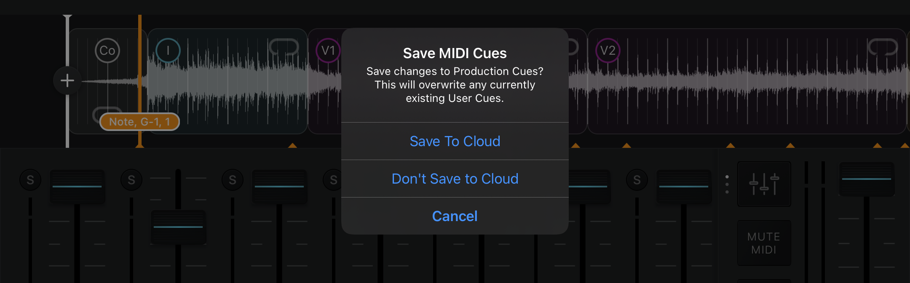
- Save to Cloud: This will save all MIDI Cue changes made in Playback to the Cloud, overwriting any MIDI Cues currently in that song online. This will affect every saved song arrangement.
- Don’t Save to Cloud: All MIDI Cue changes will be local-only, affecting only this setlist on this device.
Who can save MIDI Cues to the Cloud?
Members of an organization with Org Admin or Campus Admin permissions are able to save MIDI Cues to the cloud.
Team Members and Team Leaders with appropriate access and a Playback Premium subscription can create and edit MIDI Cues in Playback, but these changes will be local only and can not overwrite currently existing MIDI Cues in their organization's Library.
NOTE: For users with no Cloud Pro subscription, Saving MIDI Cue locally is the only option.
Automation Edit Mode
Use "Automation" edit mode in Playback to automate functions in the Playback app during live performance. Accomplish things like automatically fading down specific tracks at specific moments in a song, muting MIDI on the fly and more.
To see the full features of Automations in Playback, see: 📖Automations in Playback.
MIDI & Keyboard Mapping Edit Mode
Use your favorite MIDI Controller or a connected keyboard* to take control of Playback during a live performance, mapping controls to the play/pause button, bus faders, loop/infinite loop buttons, and much more.
Mapping a MIDI Controller to Playback
Select "MIDI Mapping" edit mode from the edit menu drawer. While in MIDI Mapping mode, every mappable action in Playback will display in blue.
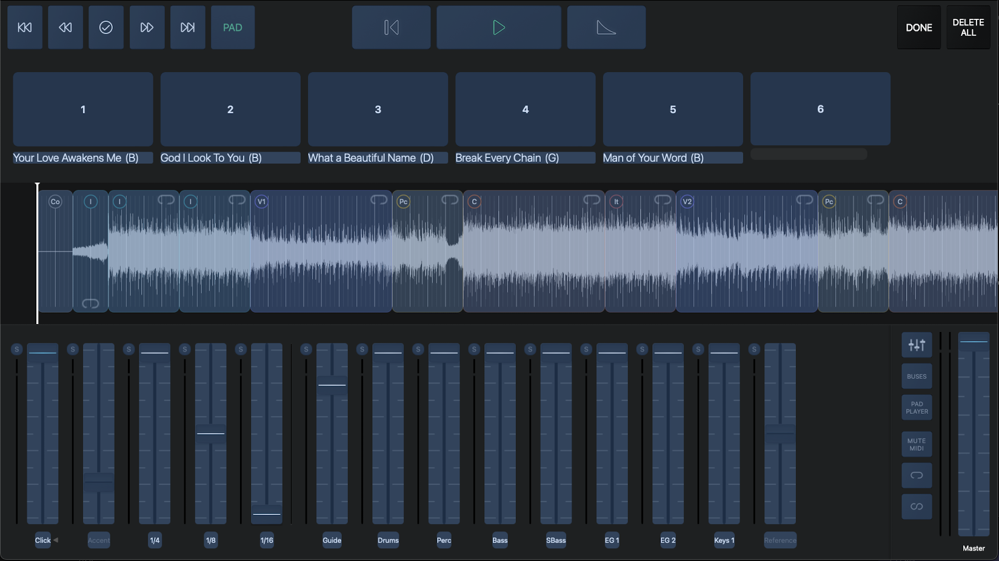
- Tap on any MIDI Mappable Playback action to select it
- While selected, move or press the control on your connected MIDI Controller
- If successful, the MIDI message sent from the MIDI control will overlay the action in Playback. You will see the first number which is the MIDI Channel, the note is coming in on, and will also see the note, CC, or PC message value after the MIDI Channel number.
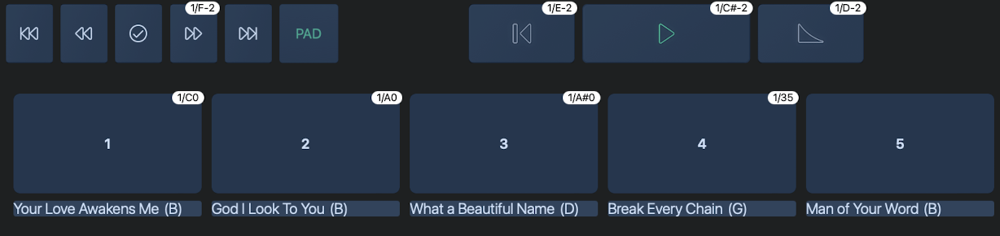
Song Position Mapping
Playback offers the ability to map a midi control to a specific song, or to a specific song position. Mapping a MIDI controller to song positions would allow song 1, song 2, and song 3’s mapped buttons to always control song 1, 2, and 3 across different setlists, no matter the song in that song’s position. Mapping to a song’s position can be done by tapping the large numbered space above the song title, and mapping to the song specifically (so a control is always mapped to that song across all setlists) can be done by tapping on the song’s title while in MIDI mapping mode.
Live ReOrder Controls
While a song is playing, a MIDI controller can navigate the arrangement and jump to any other section in the song or in between songs in a setlist using Live ReOrder. While in MIDI Mapping Edit Mode, the Live ReOrder controls (left arrow, right arrow, check mark) can be mapped to by any button on a MIDI Controller.
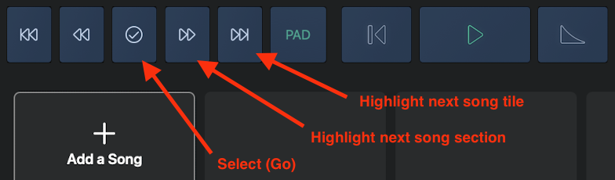
- Right and Left middle arrows will scroll through song section markers while tracks are playing
- Right and Left "skip" arrows will scroll through songs in a setlist while tracks are playing
- The checkmark will select whichever section or song has been scrolled to. Playback will jump to the selected song section marker/song as soon as the currently playing section is finished.
Once every action is mapped, you can press EDIT to exit MIDI Mapping mode. Using the MIDI Controller will now control the mapped actions in Playback.
Cloud Song Sections Edit Mode
Video Overview
Embedded video (not downloaded): https://player.vimeo.com/video/491692487
Use a Cloud Pro subscription to upload original songs and load custom audio tracks in Playback. Once tracks have been uploaded on MultiTracks.com (learn more here), song section markers can be added directly in Playback. Song section markers unlock powerful Playback features such as dynamic guide cues, looping and live ReOrdering between sections, custom song arrangements, and more.
Note: Making song section changes to a cloud song will reset the song map to default in any existing saved arrangements.
Add Song Section Markers
When a Cloud Song is first opened in Playback, the entire waveform will be labeled as an “Intro” song section. Scroll to any bar and press the + button to add additional song sections.
- Tap "Edit" and select Cloud Song Sections mode from the edit menu drawer.
Note: If this mode isn't available, first tap on a CLOUD SONG song tile to select it as the active song in the waveform view. - Scroll to any bar and tap the + button to add a Song section
- Select the section name and press Add
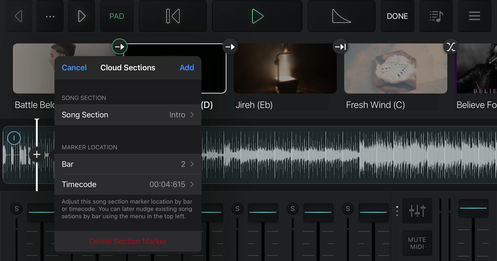
Pro Tip: In order to utilize Playback’s built-in count off for the beginning of the song, change the first song section to a Count Off and then add the first song section (whenever the band comes in) 1-2 bars after the count off.
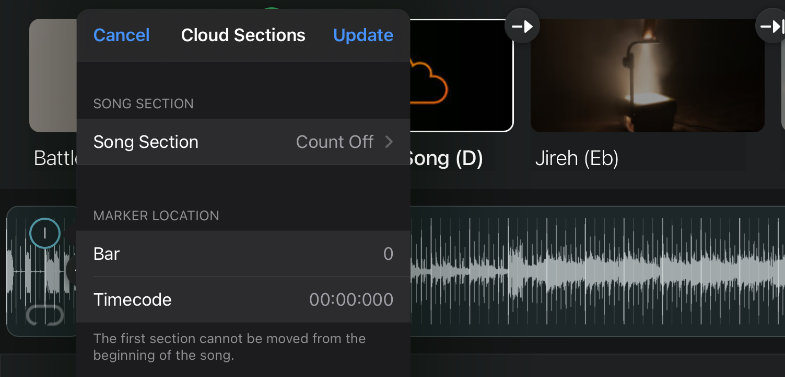
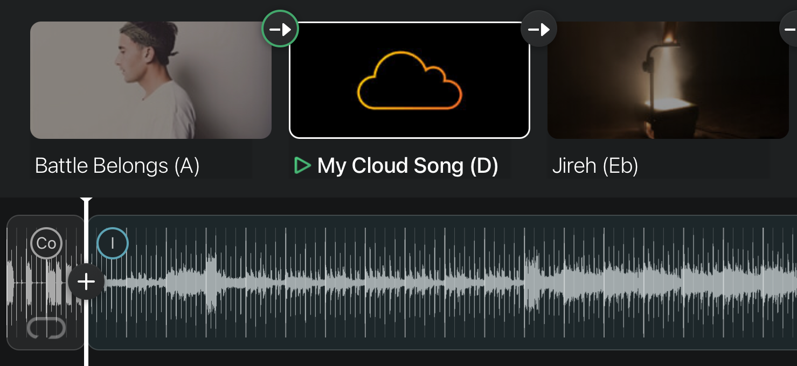
Changing a marker’s song section
- Tap on the section marker bubble to open the Edit Section Marker menu
- Tap the “Song Section” cell to choose a new song section label
- Press Update to confirm changes
Moving a Song Section Marker
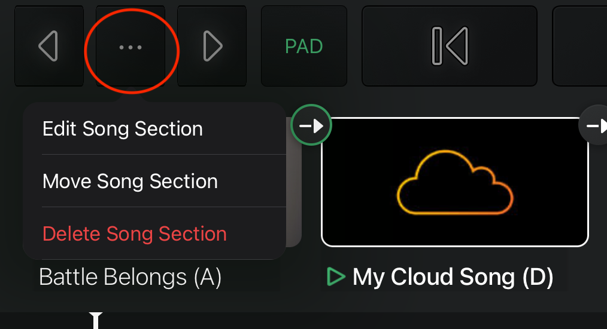
Method 1: Quick Menu moving
- While hovering over a song section, Tap the 3 dot quick menu
- Tap Move Song Section
- Use the left and right arrows to move the song section marker by measure along the waveform
- Press the checkmark to confirm changes
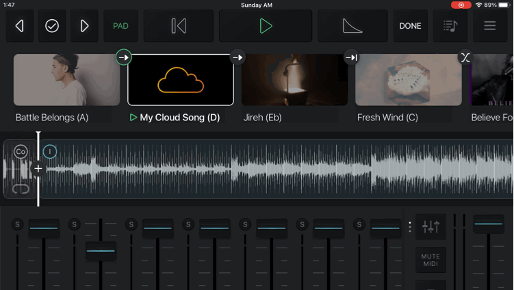
Method 2: Using the Edit Marker Menu
- Tap a section marker bubble to open the Edit Section Marker menu
- Tap the “Bar” or “Timecode” cells to move a song section
- Timecode only recommended for advanced users
- Press Update to confirm changes
Saving Cloud Song Section Markers
Since song section markers can be created online and in Playback and affect every saved song arrangement, choosing to Save To Cloud will overwrite the default song sections stored in your Library.
Don’t Save to Cloud: Changes made to song section markers will be local only in the current setlist.
SMPTE Edit Mode
SMPTE edit mode can be used to adjust the SMPTE start marker for any song in Playback. To learn more about SMPTE out in Playback, see:
📖HOW TO | SMPTE Timecode in Playback
Playback Remote
Playback can turn into a host device, so other Playback devices can connect to it and control aspects of the host Playback device from anywhere on the same network the host devices is connected to. Remote can be accessed by opening the top-right hamburger menu. For more information on Playback Remote, see:
Playback Settings
There are a number of ways to customize your Playback experience, from audio routing to click/guide presets and more.
To reveal the side menu, tap the Stack icon in the top-right corner of the main Playback interface. The side menu is where many Playback features and settings are found.
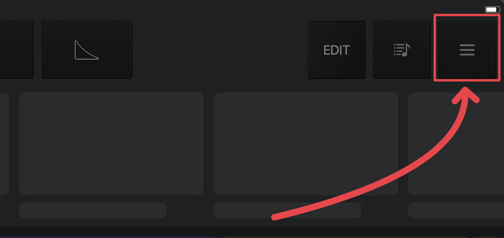
Side Menu: Settings & Features
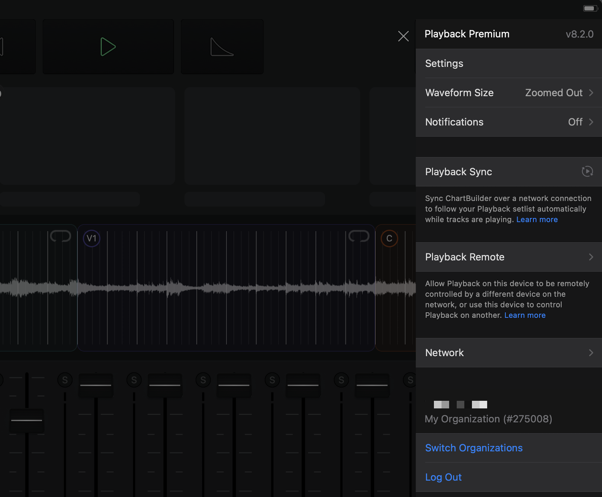
Playback's side menu has the following features:
- Main Settings Menu
- Waveform Size: adjustment
- Notifications: To toggle in-app notifications on or off.
- Playback Sync: To enable or disable Playback Sync broadcast from the Playback device.
- Playback Remote: The main Playback Remote menu to initiate a Playback Remote session, and/or connect a remote Playback device to a host Playback device. (📖Learn More)
- Network: the area to select which specific IP Address or network Playback Sync and Playback Remote broadcast through on host devices. (When utilizing multiple IP addresses or networks on a MacOS device).
- User Name, Organization Name, and Organization ID Number.
- Switch Organizations to switch between available organizations the signed-in user has access to.
- Log Out to log out the currently signed-in user of Playback.
Opening "Settings" in Playback's side menu will reveal the main Settings menu with the five settings' tabs; General, Tacks, Buses, MIDI, and About.
General Settings Tab
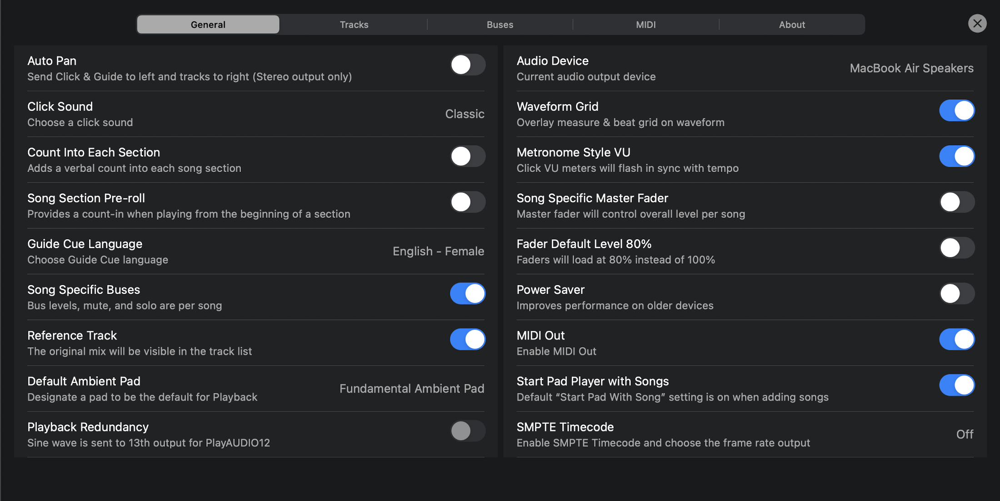
- Auto-Pan: When enabled, Auto Pan routes the click & guide through the left and all tracks through the right outputs of the iOS device’s stereo output. Auto Pan makes it possible to run tracks from Playback through the headphone output without using an audio interface. Learn about setting up Playback for Auto Pan.
- Click Sound: Choose your favorite Click sound from a variety of built-in Click Track presets. Upload your own custom Click & Guide samples for use in Playback as well.
- Count Into Each Section: Enable to add a 1-bar count-in to every song section marker. Disable to only hear the section cue 1 bar ahead of the marker.
- Song Section Pre-roll: (Playback Premium) Pressing play from the beginning of any section marker will provide a 1-bar count in as well as automatically fade in the tracks. (📖Learn More)
- Guide Cue Language: Change the Guide cue language to Spanish, Portuguese, or French, or two English language options. Upload your own custom Guide cue samples as well on the website (🌐Learn More).
- Song Specific Buses: (Playback Premium) When enabled, each song has a separate bus fader mix. Disable to use a global bus fader mix for every song.
- Reference Track: Enabled by default, the Reference Track is the original song available in the track mixer view for AppTracks, MultiTracks, and Rentals. Disable to hide the Reference Track.
- Playback Redundancy: To toggle redundant features on/off. (📖Learn More)
- Default Ambient Pad: Choose which purchased or free Ambient Pad to default to in the Pad Player for all loaded songs.
- Audio Device: See and set which connected Audio Device is currently used by Playback for all audio output.
- Waveform Grid: Enable/Disable the measure and beat grid (both visual and the snapping behavior) over the Playback waveform.
- Metronome Style VU: Enable the Click volume meters to flash like a metronome (enabled) or reflect the real-time volume output (disabled)
- Song Specific Master Fader: When enabled, each song has a separate master fader volume. Disable for a global master fader volume across every song.
- Fader Default Level at 80%: When enabled, a song is added to Playback with all faders preset at 80%. This provides headroom for increasing track volumes if needed. Disable to load a song with all track faders at 100% volume.
- Power Saver: Enable to improve performance on older devices and decrease battery consumption. Power Saver disables fader VU meters, Fader multi-touch, and reduces waveform scrolling feedback.
- MIDI Out: Enables the MIDI Out engine by default. Disable if not using MIDI Out; this will improve Playback performance and decrease battery consumption.
- Start Pad Player with Songs: When on, the "Start Pad with Song" toggle automatically fades the pad player in when a song begins to play. This global setting determines if the default setting of the "Start Pad with Song" toggle is on or off when adding songs to your setlist. This can still be later changed on an individual song basis.
- SMPTE Timecode: To toggle on/off SMPTE timecode output from Playback, and to select the frame rate for SMPTE out.
Tracks Settings Tab
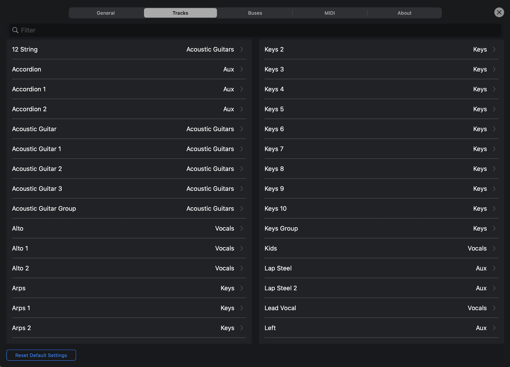
Tracks Outputs
The Tracks Settings tab is where the default bus routing of every instrument part in the MultiTracks.com catalog can be adjusted. Scroll to any instrument part, Tap the row, and select the new bus that this track will be routed to.
Track routing in Playback is device specific, and is global for that track. So changing the routing for a track name "Electric guitar 3" will change that track's routing across all songs and setlists on that device.
Buses Settings Tab
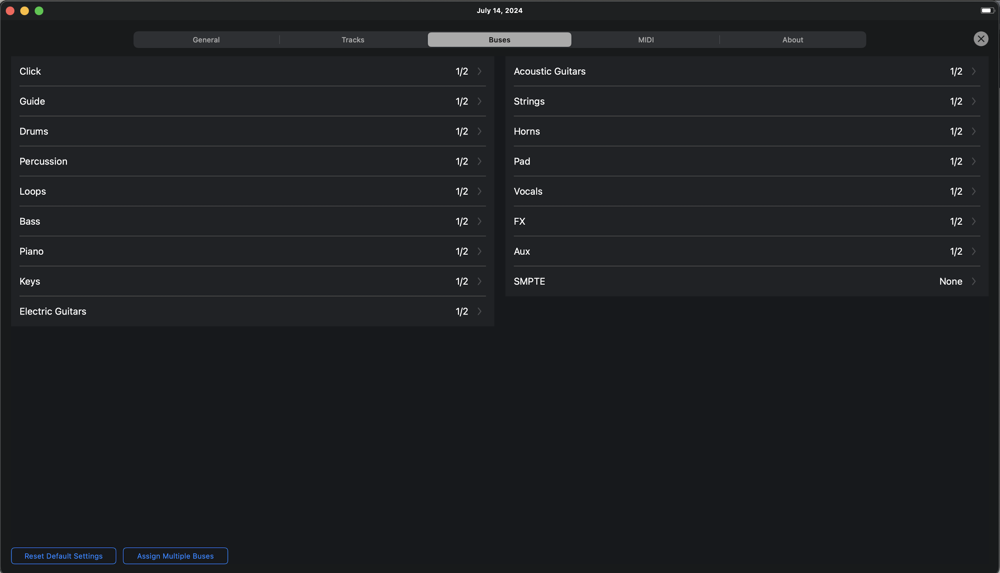
Bus Outputs
The Bus Settings tab is where Buses can be customized and outputs can be re-routed. Playback has 16 default buses with default SmartRouting that automatically route the related instrument tracks to each of the buses. However, Bus routing and naming is completely customizable and saved by audio device.
Quick Tip: Renaming Playback Buses in Bus Settings
- Swipe Left on any bus cell to Edit the name and abbreviation
- Name: Change the name of a Playback bus
- Abbreviation: Change the bus name shown under the fader in the Buses mixer
- Emojis are supported for bus names 😉
Change Bus Routing
Bus Routing is saved and recalled based on the connected audio device and dependent on the number of supported outputs. If an audio interface has 10 outputs, then those 16 are available for routing.
- Tap the bus cell to open the routing menu
- Choose which output to route the bus to and press Done
MIDI Settings Tab
When adding MIDI Cues to a song in Playback, cues can be added to any of the 8 available MIDI Buses. Control the MIDI routing of these buses in the MIDI settings.
Select a Port
Tap on this action to open the MIDI output port selector for that particular MIDI bus.
- Network Session will send MIDI Cues out to any MIDI network session that the Playback device is connected to
- Hardware Ports will be available when any hardware MIDI interface is connected to Playback via USB.
Select MIDI Channel
Choose to send MIDI Cues to MIDI global channel(s) 1-16, or over all channels.
On/Off Toggle
Enable or disable an entire MIDI Bus. (Disabling a MIDI bus will also remove all of the MIDI cue icons from the timeline for MIDI cues in that MIDI bus).
MIDI Clock
Sync the tempo of your virtual instruments, external controllers, guitar delay pedals, and more with Playback using MIDI Clock. Send MIDI Clock data out of any selected MIDI port while tracks are playing to keep any MIDI Clock-supported instruments and music equipment in time with Playback.
Select MIDI Ports to Send MIDI Clock
Navigate to the MIDI Settings tab and scroll to the bottom of the page:
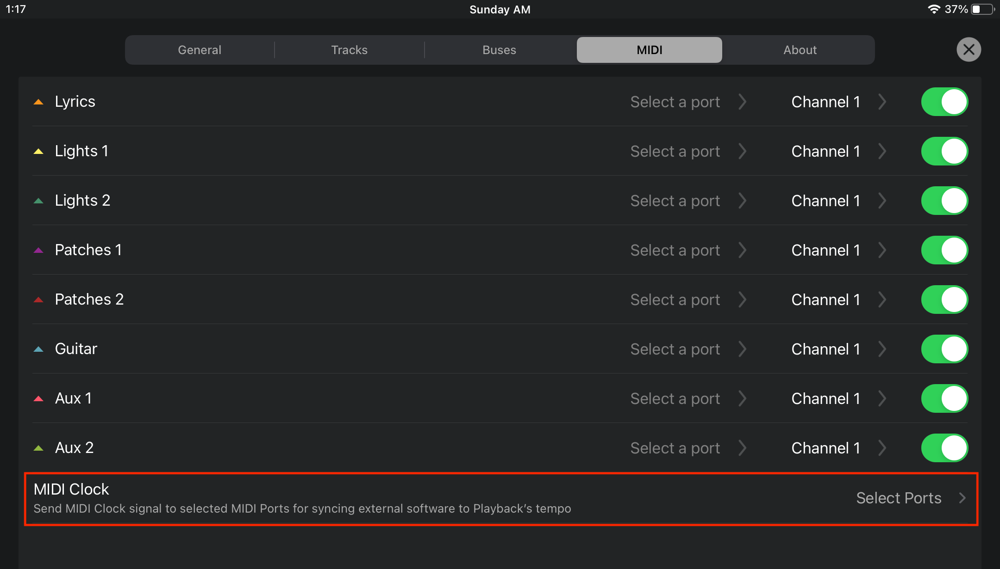
About Tab
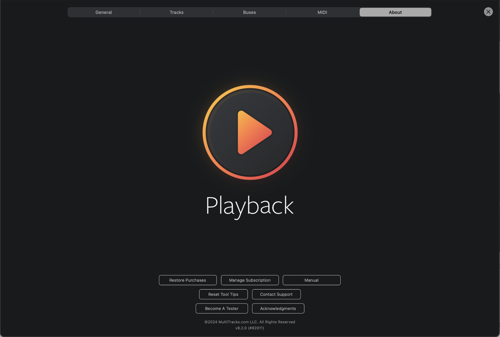
- Restore Purchases: If an iTunes subscription is expired or not being confirmed by Playback, reconcile any issues with payment info in the App Store and Tap Restore Purchases to reconnect your In-App Subscription.
- Manage Subscription: Explore the paid versions of Playback and what features they have to offer. Learn More Here.
- Manual: opens up this user guide.
- Reset Tool Tips: If a new feature seems confusing, Tap to reset and see the tool tip tour again.
- Contact Support: will send an email to support with all of the currently-opened setlist details and device information helpful for troubleshooting any potential issues.
- Become a Beta Tester: Interested in early access to upcoming new features? Apply to become a Playback beta tester.
- Acknowledgments: Playback software acknowledgments.
- Playback Version and build information is listed at the very bottom.
Setting up Audio and MIDI
There are two main ways to send audio out of Playback.
· Auto Pan: Send click and tracks from Playback using the headphone port without any additional audio hardware. Learn how to use Auto Pan with Playback.
· MultiOuts: With a Premium subscription, Playback can send up to 32 outputs can be accessed using compatible audio devices.
Choosing an Audio Interface
Playback is compatible with most class-compliant USB audio interfaces for sending multiple outputs of tracks. However, some require additional routing and setup.
Here is a list of USB audio interfaces tested and confirmed for support with Playback.
Learn More: Supported Audio Devices
Connecting MIDI Devices for control
When using Playback to its max potential, multiple USB devices may be required. In order to connect multiple devices such as MIDI controller, audio interface, and other MIDI Out connections to your iOS device, we recommend This Guide.
Learn More: Does my MIDI Controller work with Playback?
Audio Routing (Premium Feature)
With Playback Premium, every instrument track is routed to 16 buses, creating an easier way to take control of the overall mix of every song.
Redundancy Mode
While Playback's number one feature is and always will be maintaining a stable tracks experience, technology always involves some unpredictability, from an accidental disconnected cable to a dead battery.
However, a redundant setup with two Playback devices simultaneously running ensures an extra layer of protection against any hardware, software, or other freak incident that may cause an issue with the performance of Playback.
How Redundancy Works
Using the two USB ports built into an iConnectivity PlayAudio12, a setlist can be run simultaneously on two different Playback devices. The primary Playback device is used by default throughout the time that the setlist is running. However, if anything occurs that causes the audio in the first Playback device to be interrupted (software crash, cable unplugged, device issue, etc.), the PlayAudio12 will automatically detect the failure and switch over to the secondary Playback device with no detectable interruption in the audio.
This works for both tracks as well as MIDI Cues being sent out of Playback to control lyric slides, lighting cues, and more. The PlayAudio12 will automatically begin sending the secondary Playback device's MIDI Cues so there is no interruption in the production.
- Visit this article to learn everything you need to know about Playback Redundancy Mode!
SMPTE
SMPTE is a set of standards used to label frames of video or film, and has been adapted to be used to synchronize audio, video, and lighting in productions.
Introduced in v7.6.5, SMPTE is now available in Playback natively.
NOTE: SMPTE is a Playback Premium feature and requires a Playback Premium seat.
For setup instructions see: HOW TO | SMPTE Timecode in Playback
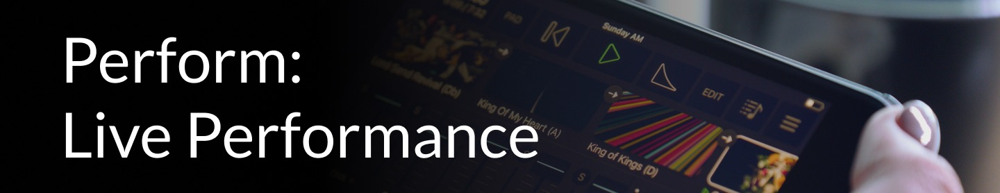
Live Performance
The heart and soul of Playback is to be the most powerful, flexible, and simple solution for running tracks live. Let’s break down some of these features.
Live Transport Control: Starting and Stopping Songs
The top transport row is where the primary controls for the playback of songs loaded in your setlist are found. See where in the song you currently are, the time signature/tempo, and more.
- Setlist Title: View the currently opened setlist title in the iOS header row.
- Time Signature/Tempo Indicator: This is where the currently selected song’s tempo and time signature are displayed. If a song has tempo/time signature changes, this display will change in real-time while the song plays.
- Time Display: See the currently selected song’s total song length (start/end time), as well as the current timestamp. Tap this display to set the selected song’s custom start/end time.
- Pad Control: Use this button to turn the Pad Player on and off. While in Link mode, the Pad Player will automatically follow your song-specific settings and setlist transitions. Learn more about Pad Player.
- Back to Start: Tap this button to return to the beginning of the currently playing song.
- Play: Start and stop playback of tracks in the selected song.
- Fade: Use this button to automatically fade tracks in and out while playing. The Click, Guide, and Pad Player will continue playing when tracks are faded out.
Setlist Row: Navigating the Setlist
The second row of Playback is where you interact with the songs during live performance and navigate through songs in your setlist during live performance.
- Selecting Songs: While the tracks are stopped, Tap any song tile to select that song and cue it for playback. When Play is pressed, the selected song will begin to play from the start.
- Live Crossfade: While a song is playing, double tap on another song tile to begin crossfading into it while the first song fades out. This is especially useful when transitioning from an ambient pad song tile to a new song or click track.
Waveform: Navigating the Song
Use the waveform to navigate the currently playing song in real time. Here are some powerful tools and actions to use while a song is playing.
- Live ReOrder (Pro feature): Scroll the waveform while the song is playing to locate another song section. Double tap the song section bubble, and Playback jump to it mid-song as soon as the currently playing section ends.
- Enable Section Loop (Pro feature): Tap the Loop icon in the top right of any song section to cue that section for a Single Loop. Once Playback comes to the end of a loop-enabled section, it will begin replaying.
Tracks/Buses Mixer: Controlling Your Tracks
Create your own mix of every song’s tracks in the tracks/buses mixer pane. The Tracks Mixer is where volume control of each track in a song can be set.
Toggle between Mixer Views
- Tap the top button in the console to toggle between views in the mixer pane: Tracks Mixer, Bus Mixer, and Pad Player
Mixing Faders
Understand each way to interact with the faders for complete control of your mix.
- Change Volume: Press and hold any fader to raise or lower the volume of that track or bus.
- Mute the fader: Tap the track or bus name to mute the instrument. Muting a Bus fader will automatically mute all tracks routed to that bus.
Reference Track Fader and controls
- The reference track is muted by default.
- Soloing the reference track with the circle "S" button will solo the reference track and mute all tracks, including the click and guide.
- Tapping on the "reference" track name will unmute the reference track, and mute all instrument tracks, but keep the click and guide track with the reference.
Master Fader
Take full control of all audience-facing audio with the master track fader. This fader controls the overall volume output of all instrument tracks + buses, as well as the pad player.
Reminder: The master fader volume is globally set by default. For song specific master volume, enable this in General Settings.
- Tip: Do you need to perform a factory reset of Playback for any reason? Triple-Tap the master fader label to initiate a factory reset, wiping all downloaded data and logging out.
Click Track Subdivisions
When the selected Click Track preset is in the Built-In category, click subdivisions are available for more detailed control over the click track mix.
- With a built-in click sound selected, Tap and Hold the Click fader to expand the subdivisions.
- Control the mix of Accent, ¼ note, 1/8 note, and 1/16 note subdivisions.
Note: Built-In Click Track mixes are Song Specific.
Pad Player: Using the Interface
The Pad Player interface can be opened using the mixer view toggle and is available for Premium subscribers. Playback Premium is only required to unlock the power of live key and pad sound switching, or running the pad player in LIVE mode instead of LINK mode. Pad Player can be run in LINK mode with Playback INTRO and/or Premium.
- Learn everything there is to know about using the Pad Player: www.multitracks.com/products/padplayer
Playback Sync
Embedded video (not downloaded): https://player.vimeo.com/video/552883416
Playback Sync connects the Charts in ChartBuilder to the setlist in Playback in real time; the Charts swipe automatically and follow Playback arrangement changes.
- Playback Sync is a broadcast enabled from Playback
- ChartBuilder can see and connect to available Playback devices
- Once connected and in sync, ChartBuilder will automatically follow Playback while Tracks are playing.
Which Playback Actions will be followed by ChartBuilder?
- Track Playback: ChartBuilder will automatically scroll through song sections and highlight the current section, as well as switch songs through programmed transitions
- Live navigation actions: Loop, Live ReOrder, and Live Crossfading
- Song section scrolling and song selection while Tracks are paused
- Setlist Updates: When Playback saves a new version of the currently synced setlist, ChartBuilder will automatically receive the update.
- Setlist Changes: If Playback opens a new setlist, ChartBuilder will automatically be prompted to open the new setlist.
Dive Deeper into Playback Sync.
- HOW TO | Use Playback Sync - Explore the dedicated article on how to setup Playback Sync in ChartBuilder and Playback.
- Visit the Landing Page
Live Navigation: Console Buttons
Playback has several powerful live flexibility controls in the Console, located in between the Master fader and tracks pane.
- Mixer toggle: Press to toggle between the tracks, buses, pad player, and waveform (iPhone only)
- MUTE MIDI: Toggle button that temporarily disables the overall sending of MIDI Cues out of Playback. This is a useful way to remove automation during an unplanned moment.
- Loop (Pro feature): While tracks are playing, the Loop button will arm the currently playing song section to single looponce it finishes playing. After the single loop is triggered, the loop button is disabled and the song will continue playing through the section.
- Infinite Loop (Pro feature): While tracks are playing, the Infinite Loop button will arm the current song section to indefinitely loop. This section will loop until the Infinite Loop button is pressed again to disable.
Live Navigation: Keyboard Shortcuts (Mac Only)
When using Playback on a Mac, a selection of keyboard shortcuts are available for quickly navigating Playback during service. These keyboard shortcuts will control the designated actions in Playback while the app is foregrounded:
Transport Controls
- Space Bar = Play/Pause
- P = Pad On/Off
- F = Fade In/Out
- L = Loop
- I = Infinite Loop
Setlist Navigation
- Left + Right Arrow Keys = Browse through the song sections, when tracks are playing or paused
- Return/Enter (while tracks are playing) = Confirm ReOrder to new section
- Keyboard Numbers
- While playing = Live Crossfade to corresponding song in setlist
- While paused = Select corresponding song in setlist
Congrats, you are now a master of using Playback in live performance!
Playback Named Arrangements
Using the power of Cloud Pro, song arrangements can be saved to the Cloud and recalled at any time as Named Arrangements – on any device and any setlist.
To access the Named Arrangements menu, simply use a song's three-dot menu on any song tile and the Named Arrangements settings are at the very top.
Managing Named Arrangements
Manage a song’s custom arrangements in the Edit Song Menu. While in Setlist Edit Mode, Tap on a song tile to open the Edit Song Menu. The top section of the Edit Song Menu is where the song’s arrangements can be managed and loaded.
- Arrangement Picker: The first cell is where the currently loaded arrangement is shown. Tap the cell to open the Arrangements Picker menu.
- Edit Saved Arrangements: Tap Edit in the top right to manage currently saved arrangements. Swipe to delete, or tap the pencil icon to rename any arrangement.
Note: The default arrangement cannot be renamed or deleted.
Saving Named Arrangements
Do you like particular changes to a song arrangement made in a setlist? Update the currently loaded song arrangement with any changes made in the setlist. A new arrangement can also be saved at any time from the setlist.
- Open the Edit Song Menu
- Save To Cloud: This will save any changes made to currently loaded arrangement and overwrite the previously saved version.
- Leave a note (optional) Mark the latest changes made to the arrangement.
- Save As New: Save the current changes to the song as a new song arrangement. Simply give the new arrangement a name and tap save.
Loading Named Arrangements
Any saved song arrangement can be loaded in the current setlist, replacing any currently unsaved song changes.
- Tap the Arrangements cell to open the arrangements picker menu
- Tap on any saved arrangements available, which will return back to the Edit Song Menu. The settings and details of the newly selected song arrangement are now visible in the Edit Song Menu
- Tap Update to confirm selection and load the new arrangement. Note: This may require an offline key/tempo change depending on the newly loaded arrangement.
Restoring Named Arrangements
If undesired changes have been made to a custom arrangement since the last time it was saved, undo these changes by restoring the arrangement.
- Restore from Cloud: Restore the latest saved version of the currently loaded song arrangement, overwriting and undoing any local changes made in the setlist.
Conclusion and FAQs
Is there something missing from this User Guide? Still confused about an experience in Playback, or do you have a request or an idea for making Playback even better? Please reach out to MultiTracks.com/support and we would love to assist you.